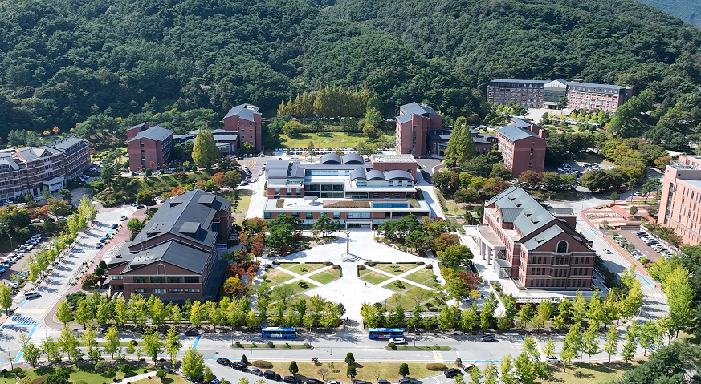

Yonsei University (Mirae Campus)
Welcome to our research lab, where we apply cutting-edge scientific computing and machine learning to address complex problems in computational physics and medicine. Our team is committed to developing advanced numerical solvers and innovative deep learning methods that maximize performance and efficiency. If you are interested in our research projects, please feel free to reach out via email at mshin@yonsei.ac.kr.
Visitor Count: Loading...